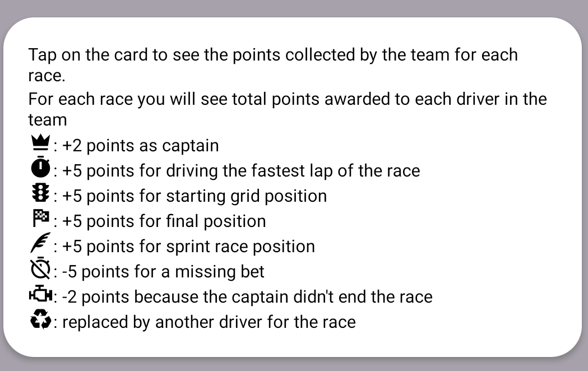

Teams' standing sorted by points.
Pull to refresh the page some time after the race!

- List of teams in league. Your team will be highlighted using the color you chose during player creation or in the settings page.
- Tap on any card to see how the team performed in the previous races.
Here you can see points scored by drivers of the team for each race. Far right column is the position of the team and how it changed compared to last race. - Open a dialog showing a summary of the points earned by each team in the last race.
Next to the points are shown the icons for each event that contributed to the final result.
- Open a dialog describing all the icons you can see in the results for each team.
